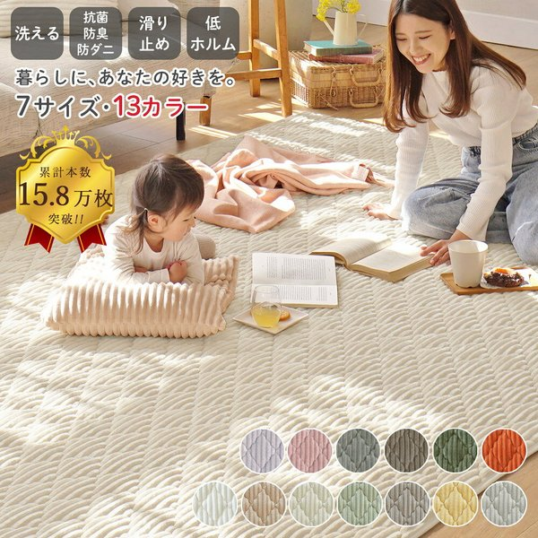
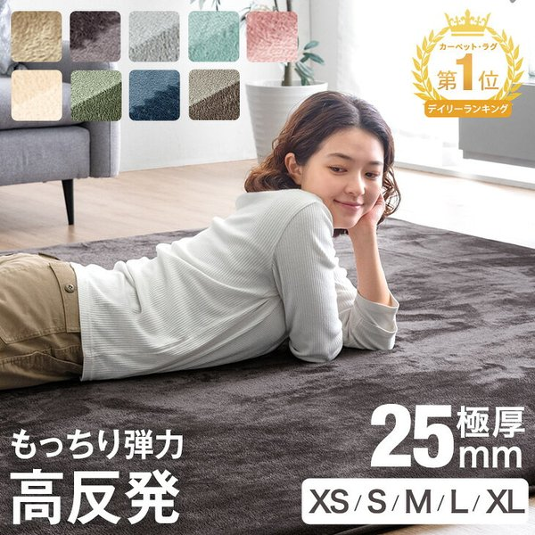
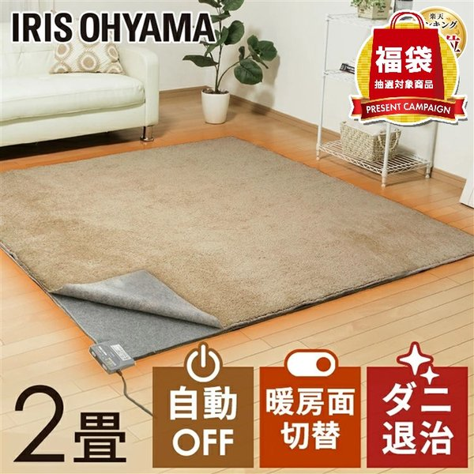
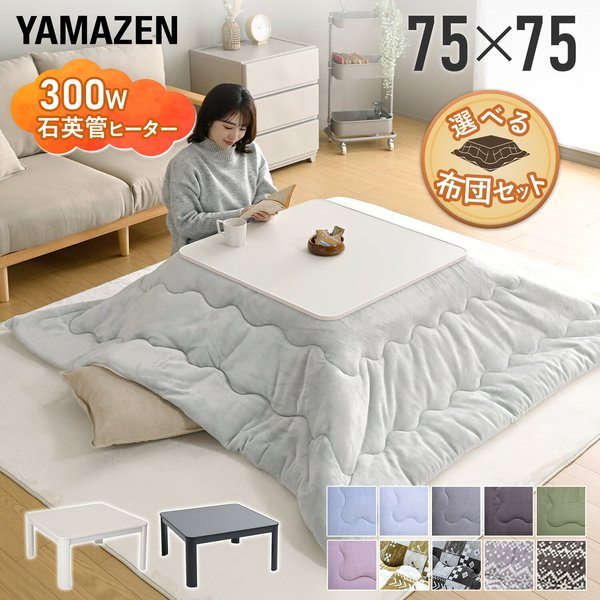
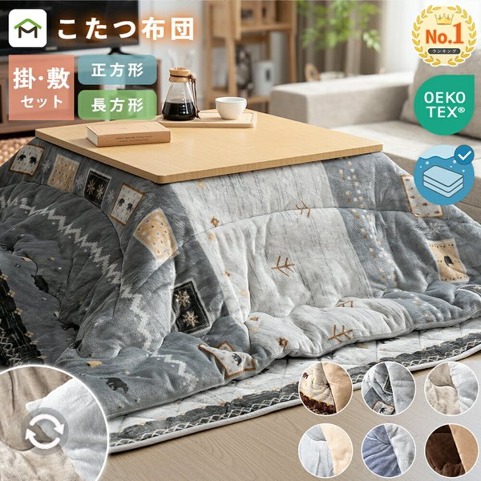
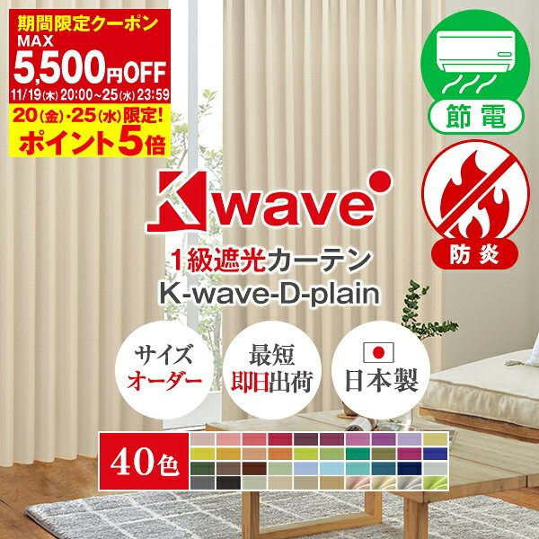
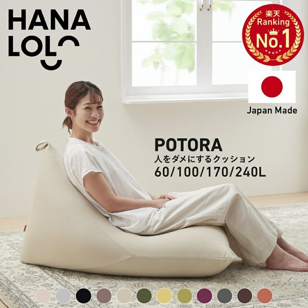
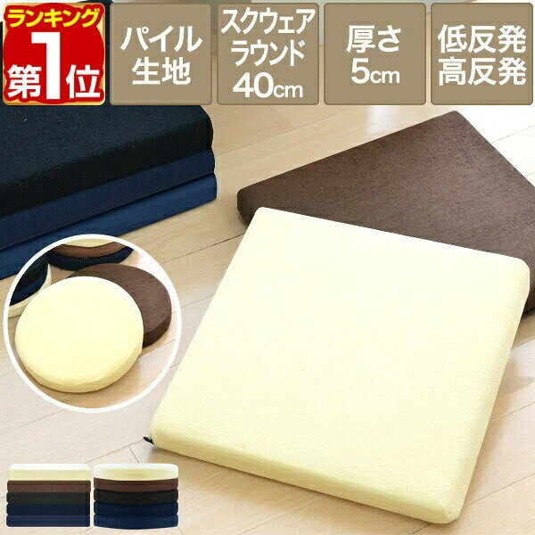
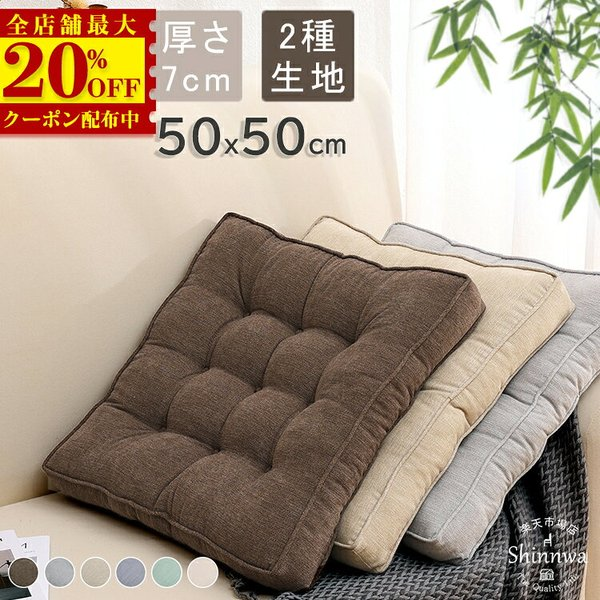
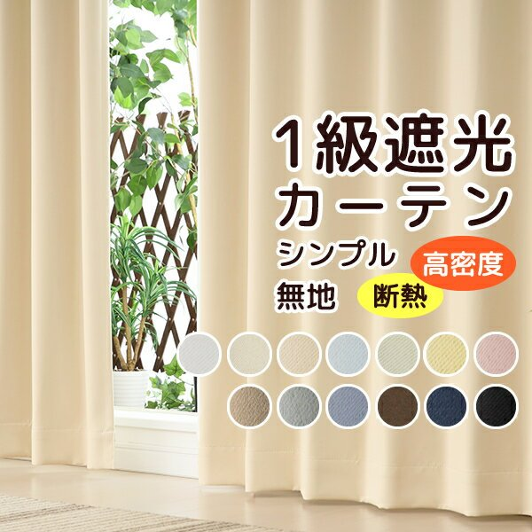

【2026年冬の底冷え対策】ラグ・ホットカーペット・こたつ布団・ビーズクッション・断熱カーテンおすすめ10選｜リビングの床と窓を暖める
冬のリビングの寒さは、暖房の設定温度より「床と窓」から来ています。床が冷たいと足元が冷え、窓が冷たいと部屋全体が冷える。暖房を上げる前に、床と窓を塞ぐほうが効きます。
順番は3つです。まず床。ラグを1枚敷くだけで、フローリングの冷たさは消えます。もっと暖かさが欲しいなら、ホットカーペットかこたつを足す。次に窓。断熱カーテンは、窓から入る冷気を減らして暖房の効きを変えます。遮光1級なら、寝室の遮光も兼ねられます。最後に座る場所。床に座る時間が長い家なら、ビーズクッションや低反発クッションを1つ。椅子に座る時間が長いなら、椅子用のクッションを選んでください。
本記事では、楽天市場で人気・高評価の冬のリビング暖房グッズ10選を、実売価格とレビュー評価つきで写真付き紹介します。
- おすすめ10選 スペック・特徴比較表
- BEST 1｜シエロ キルトラグ（洗える・滑り止め付き）
- BEST 2｜高反発ラグ 極厚25mm（防音・滑り止め）
- BEST 3｜ホットカーペット 2畳 本体 IHC-20-H（176×176cm）
- BEST 4｜こたつ 布団セット 75×75cm 正方形
- BEST 5｜こたつ布団 掛敷2点セット（洗える・リバーシブル）
- BEST 6｜K-wave-D-plain 断熱オーダーカーテン（遮光1級）
- BEST 7｜ポトラ ビーズクッション（ニットカバーセット）
- BEST 8｜コンビクッション 40×40cm 厚さ5cm（低反発×高反発）
- BEST 9｜フロアクッション 50×50cm 厚さ7cm
- BEST 10｜1級遮光カーテン 5317ムック（13色）
- 【読者負担0円】買わなくても得する無料サービス
- まとめ：冬のリビング暖房グッズ10選の選び方
| 順位 | 商品名 | ブランド | 最大の特徴・おすすめ理由 | 総合評価 |
|---|---|---|---|---|
| BEST 1 | シエロ キルトラグ（洗える・滑り止め付き） | apoloce（アポローチェ） | 洗えるキルトラグ | 4.76 |
| BEST 2 | 高反発ラグ 極厚25mm（防音・滑り止め） | タンスのゲン | 厚さ25mmで防音・断熱 | 4.63 |
| BEST 3 | ホットカーペット 2畳 本体 IHC-20-H（176×176cm） | アイリスオーヤマ（IRIS OHYAMA） | 2畳で家族が座れる | 4.33 |
| BEST 4 | こたつ 布団セット 75×75cm 正方形 | 山善（YAMAZEN） | 布団付きのセット | 4.33 |
| BEST 5 | こたつ布団 掛敷2点セット（洗える・リバーシブル） | HOMFINE（ホームファイン） | 掛け敷きの2点セット | 4.70 |
| BEST 6 | K-wave-D-plain 断熱オーダーカーテン（遮光1級） | 川島織物セルコン（くれない） | 遮光1級・防炎・断熱 | 4.46 |
| BEST 7 | ポトラ ビーズクッション（ニットカバーセット） | ハナロロ（HANA LOCO） | 体に沿うビーズクッション | 4.29 |
| BEST 8 | コンビクッション 40×40cm 厚さ5cm（低反発×高反発） | maxshare | 低反発×高反発の2層構造 | 4.21 |
| BEST 9 | フロアクッション 50×50cm 厚さ7cm | シンワ（Shinwa） | 50×50cmの大判 | 4.47 |
| BEST 10 | 1級遮光カーテン 5317ムック（13色） | TENGOKU（テンゴク） | 1級遮光で断熱・保温 | 4.63 |
シエロ キルトラグ（洗える・滑り止め付き）

apoloceのキルトラグ「シエロ」です。洗えるラグで、95×130から200×300までサイズを選べます。キルト状なので、毛足の長いラグより掃除機をかけやすく、ペットや子どもがいる家でも扱いやすい。滑り止め付きで、フローリングでもずれにくい。累計15.5万枚、レビューは7,123件の実績があります。まずリビングの中央に1枚、という使い方ができます。楽天市場での実売価格は約2,990円（2026年11月時点）。
- 洗えるキルトラグ
- 滑り止め付き
- レビュー7,123件
- 毛足が短いので、足裏のふわふわ感は薄い
高反発ラグ 極厚25mm（防音・滑り止め）

タンスのゲンの高反発ラグです。厚さ25mmの極厚タイプで、防音とクッション性を両立しています。マイクロファイバーのフランネルで、滑り止め付き。0.8畳から4畳まで展開があり、リビングにも寝室にも合わせられます。厚みがあると床の冷気が伝わりにくく、下に敷くマットが不要になります。集合住宅の足音対策にも向いています。楽天市場での実売価格は約3,499円（2026年11月時点）。
- 厚さ25mmで防音・断熱
- 滑り止め付き
- サイズ展開が豊富
- 厚みがあるぶん重量があり、洗濯機では洗えない
ホットカーペット 2畳 本体 IHC-20-H（176×176cm）

アイリスオーヤマのホットカーペット2畳、176×176cmです。面積切替と温度調節ができ、6時間で自動オフ。ダニ対策モードも付いています。2畳は2〜3人が座れる大きさで、リビングの中央に敷くのにちょうどいい。電気カーペットは、暖房をつけるほどではないけど足元が冷える日に、いちばん出番が多い家電です。楽天市場での実売価格は約8,980円（2026年11月時点）。
- 2畳で家族が座れる
- 6時間自動オフ
- ダニ対策モード付き
- 8,980円で、上に敷くラグは別に用意する
こたつ 布団セット 75×75cm 正方形

山善のこたつセット、75×75cmの正方形です。布団付きで、300Wの石英管ヒーターを内蔵しています。一人用にちょうどいいサイズで、リビングの隅や寝室に置けます。こたつは部屋全体を暖めるより足元だけを暖める道具。暖房費を抑えたい冬に、部分暖房として使うのが現実的です。楽天市場での実売価格は約7,999円（2026年11月時点）。
- 布団付きのセット
- 75cmで一人用にちょうどいい
- 300Wで電気代を抑えやすい
- 正方形75cmなので、2人で使うと足元が窮屈
こたつ布団 掛敷2点セット（洗える・リバーシブル）

HOMFINEのこたつ布団セットです。掛け布団と敷き布団の2点セットで、長方形・正方形・円形から選べます。洗えるフランネル素材で、リバーシブルだから両面使えます。静電気防止加工付き。こたつ布団は毎年洗えるものが使いやすく、汚れても自宅で洗えると気分的にも楽です。楽天市場での実売価格は約5,280円（2026年11月時点）。
- 掛け敷きの2点セット
- 洗えるフランネル
- リバーシブルで両面使える
- 5,280円で、こたつ本体は別に購入する
K-wave-D-plain 断熱オーダーカーテン（遮光1級）

川島織物セルコンの「くれない」シリーズ、K-wave-D-plainです。遮光1級・防炎・断熱のオーダーカーテンで、40色から選べます。1cm単位でサイズを指定できるので、掃き出し窓にも腰高窓にも合わせられます。断熱カーテンは窓から入る冷気を減らす効果があり、暖房の効きが変わります。日本製で、1枚から注文できます。楽天市場での実売価格は約5,780円（2026年11月時点）。
- 遮光1級・防炎・断熱
- 40色から選べる
- 1cm単位のオーダー
- 5,780円（1枚）で、両開きの窓は2枚必要
ポトラ ビーズクッション（ニットカバーセット）

ハナロロのビーズクッション「ポトラ」です。人をダメにするクッションとして知られる形で、60・100・170・240の4サイズ展開。ニットカバー付きで、カバーは洗えます。ビーズが体に沿うので、座椅子としても背もたれとしても使えます。読書やゲームの時間が長い人ほど、この楽さは効きます。楽天市場での実売価格は約8,820円（2026年11月時点）。
- 体に沿うビーズクッション
- カバーが洗える
- 4サイズ展開
- 8,820円と、クッションとしては高価
コンビクッション 40×40cm 厚さ5cm（低反発×高反発）

maxshareのコンビクッションです。低反発ウレタンと高反発ウレタンを2層に重ねた座布団で、沈み込みすぎず、戻りすぎない座り心地。40×40cm、厚さ5cmで、カバーは洗えます。丸型と四角から選べるので、椅子の形に合わせられます。椅子の座面が固い、長時間座るとお尻が痛い、という人の最初の1枚に向いています。1,210円と試しやすい価格です。楽天市場での実売価格は約1,210円（2026年11月時点）。
- 低反発×高反発の2層構造
- 40×40cm・厚さ5cm
- カバーが洗える
- 厚さ5cmなので、座面の固さによってはもう少し厚みが欲しくなる
フロアクッション 50×50cm 厚さ7cm

シンワのフロアクッション、50×50cm・厚さ7cmです。大判で厚手なので、床に直接座るときのクッションとして使えます。洗えるカバー付きで、体圧を分散する低反発ウレタン。こたつの周りや、子どもの遊び場に敷くのにちょうどいい大きさです。楽天市場での実売価格は約3,080円（2026年11月時点）。
- 50×50cmの大判
- 厚さ7cmで座りやすい
- カバーが洗える
- 3,080円で、1枚では家族全員分は足りない
1級遮光カーテン 5317ムック（13色）

1級遮光カーテンの5317ムックです。13色展開で、巾100cm×2枚組、または幅80・150・200cmの1枚入りから選べます。遮光1級で、断熱・遮熱・保温に対応。既製品なので、届いたらすぐ付けられます。寝室の遮光と、リビングの断熱を兼ねたいときに使いやすい価格です。楽天市場での実売価格は約1,254円（2026年11月時点）。
- 1級遮光で断熱・保温
- 13色展開
- 既製品ですぐ付けられる
- 既製品のため、窓の寸法に合うサイズを選ぶ必要がある
この記事の商品を買う前に、まずは無料で得する選択肢をチェック。どれも登録・利用は0円で、無料期間中に解約すれば料金はかかりません。読みたい雑誌がある人、ポイントを貯めたい人、アンケートなら気軽という人、それぞれに合うものを選べます。
初回31日無料・無料期間中に解約すれば0円 → 楽天ポイントモール｜登録無料で毎日ポイ活
買い物なしでもポイントが貯まる無料サービス → 楽天インサイト｜アンケートに答えてポイント
登録無料・すきま時間のアンケートで貯まる → 楽天カード｜年会費永年無料
新規発行・年会費ずっと0円 →
4つのサービスの違いと使い分けは「出費0円で得する！買わずにポイントが貯まる無料サービス厳選4選」でまとめています。
💡 まとめ：冬のリビング暖房グッズ10選の選び方
リビングの底冷えは、床から順に塞ぐと変わります。まずは洗えるキルトラグか、厚さ25mmの高反発ラグを1枚。床の冷たさが消えるだけで、足元の体感ははっきり違います。もっと暖かくしたいなら、2畳のホットカーペットか、布団付きのこたつを。こたつは部屋全体ではなく足元だけを暖める道具なので、暖房費を抑えたい家に向いています。窓は断熱カーテンで。川島織物セルコンのオーダーなら寸法が合い、既製品なら1,000円台で揃います。床に座る時間が長いなら、ビーズクッションか低反発クッションを1つ足してください。暖房の温度を上げる前に、この3か所を見直すだけで、冬のリビングはかなり楽になります。
楽天市場では「5と0のつく日」や「お買い物マラソン」などのキャンペーンに合わせて購入すると、ポイント還元が最大化してお得に手に入ります。ぜひチェックしてみてくださいね。